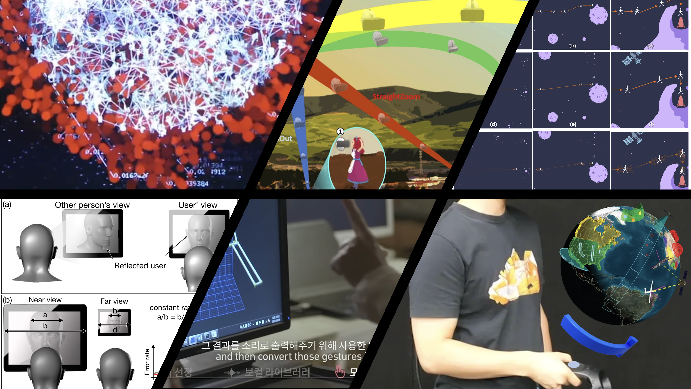

SIID Lab is an interdisciplinary Human Computer Interaction (HCI) and 3D User Interface (3DUI) research group in the College of Performance, Visualization, and Fine Arts at Texas A&M University.
We investigate how humans perceive and interact with virtual and physical objects and spaces in immersive environments, such as Virtual, Augemented, and eXtended Reality (AR / VR / XR). Using these insights, we create innovative spatial interaction and visualization techniques.
Research Areas
AI-powered adaptive 3D user interfaces
Novel 3D interaction techniques
Remote collaboration in immersive environments
High-fidelity AR/VR/XR prototyping
Interactive art and performance with generative AI